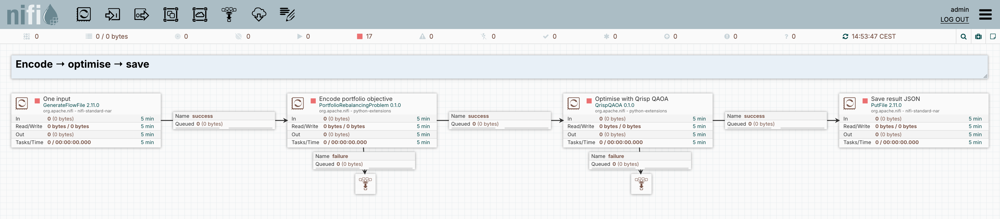

Select a two-asset portfolio
Encode three assets as a cost Hamiltonian, optimise a QAOA circuit, and save the sampled distribution.
1. The problem and the dataflow
Select exactly two of three assets. The objective combines expected return, covariance-weighted risk, and a penalty for violating the budget. PortfolioRebalancingProblem encodes that classical objective as a diagonal Hamiltonian. QrispQAOA consumes the Hamiltonian, trains a two-layer circuit with COBYLA, and samples the trained state.
- 01Create inputOne empty JSON FlowFile starts the case.
- 02Encode problemPortfolioRebalancingProblem emits a diagonal cost Hamiltonian.
- 03Optimise & sampleQrispQAOA runs the hybrid loop and final simulation internally.
- 04Save distributionPutFile writes portfolio probabilities as JSON.
| Boundary | Data and meaning |
|---|---|
| Input | Returns, covariance matrix, risk factor 0.5, budget 2, and penalty 3.0 are encoder properties. |
| Encoder → solver | Content uses the framework-neutral sparse Pauli JSON format; hamiltonian.format and qubit metadata identify the representation. |
| Solver output | A JSON probability distribution plus qaoa.best_measurement, qaoa.best_value, and mean objective qaoa.optimal_value. |
| Mixer and budget | RX mixer; the budget is encouraged by an objective penalty. Infeasible samples remain possible. |
| Bitstring meaning | For the saved output convention, 011 selects assets 1 and 2, with asset indices starting at 0. |
RQ1 capability: Connect a classical problem encoder to a hybrid quantum–classical optimiser through a shared Hamiltonian format.
2. The actual NiFi canvas

3. Inspect the configuration
The following values come from the same specification used to create the NiFi processors.
Encode → optimise → save
PortfolioRebalancingProblem — properties
| Property | Configured value |
|---|---|
| Expected Returns | [0.1, 0.2, 0.15] |
| Covariance Matrix | [[0.05, 0.01, 0.02], [0.01, 0.04, 0.01], [0.02, 0.01, 0.06]] |
| Risk Factor | 0.5 |
| Budget | 2 |
| Penalty Factor | 3.0 |
QrispQAOA — properties
| Property | Configured value |
|---|---|
| Layers | 2 |
| Mixer Type | RX |
| Optimizer | COBYLA |
| Max Iterations | 80 |
| Shots | 1024 |
| Initial Parameters | 0.2,0.4,0.6,0.8 |
| Random Seed | 17 |
Each source creates one JSON input using Run Once (an explicit edge list for MIS, otherwise an empty object). The algorithm parameters are processor properties. PutFile saves the returned probability distribution. The portable flow export uses ./supplementary-results as its output directory. Algorithm failures route to visible inspection queues.
4. Saved execution and independent check
The exact optimum is 011, with objective -0.2900. Its observed probability is 30.96%; the total probability of selecting exactly two assets is 91.11%. The independently calculated mean objective is 0.155962. A best sampled solution is different from the mean objective and from the most probable state. This single small run does not establish general optimisation performance.
Encode → optimise → save
Captured 2026-09-14T11:57:40.958634+00:00. Values are probabilities returned by Qrisp, not integer shot counts. The Shots property was 1024.
Check every possible portfolio
The independent checker evaluates the classical objective directly for all eight bitstrings, without calling the quantum solver.
C(x) = 0.5 × xᵀΣx − μᵀx + 3 × (Σx − 2)²
| Portfolio | Selected assets | Budget met? | Objective | Observed probability |
|---|---|---|---|---|
000 | None | No | 12.0000 | 1.27% |
001 | 2 | No | 2.8800 | 2.44% |
010 | 1 | No | 2.8200 | 1.95% |
011 | 1, 2 | Yes | -0.2900 | 30.96% |
100 | 0 | No | 2.9250 | 3.22% |
101 | 0, 2 | Yes | -0.1750 | 30.18% |
110 | 0, 1 | Yes | -0.2450 | 29.98% |
111 | 0, 1, 2 | No | 2.6650 | 0.00% |
Explore the saved objective
Toggle the selected assets to inspect their classical cost. This interaction uses the archived table above; it does not run NiFi or a quantum simulation.
The Random Seed property is best-effort: Qrisp does not expose a complete seed interface for every stage. Reruns may produce different probabilities. The archived output and independent exact-cost checks make this reported run inspectable.
Read the machine-readable checks · Inspect the independent checker
5. Reproduce or inspect the implementation
Import the downloadable process group into NiFi with the supplied Python processors installed. Review its output directory, start the downstream processors, and use Run Once on each source. The exported processors are stopped by default.
For exact commands and version details, see the reproduction guide. Installation is optional for reviewing the screenshots, configuration tables, and saved results on this page.